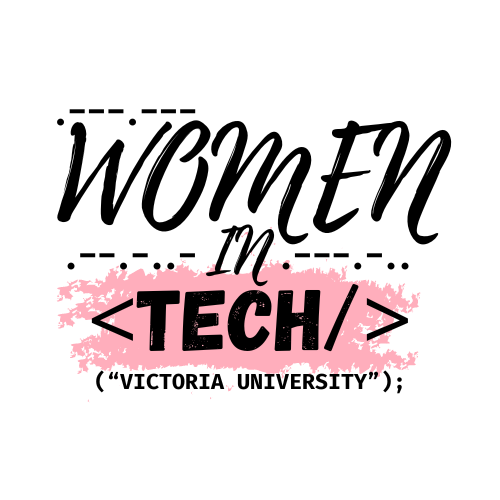

|  |
MY INTROAbout MeMy name is Women in Tech VU, I am passionate about technology, love to solve complex problems in diverse domains. As much as I thrive in the ever evolving world of technology, its not just the code or the algorithms for me; it's about the people and the connections I forge along the way. I am enthusiastic for collaboration and I have the ability to connect with individuals from all walks of life. This enriches my journey in tech fostering a vibrant community where ideas flourish and possibilities abound. Name: Email: Website: Experience |